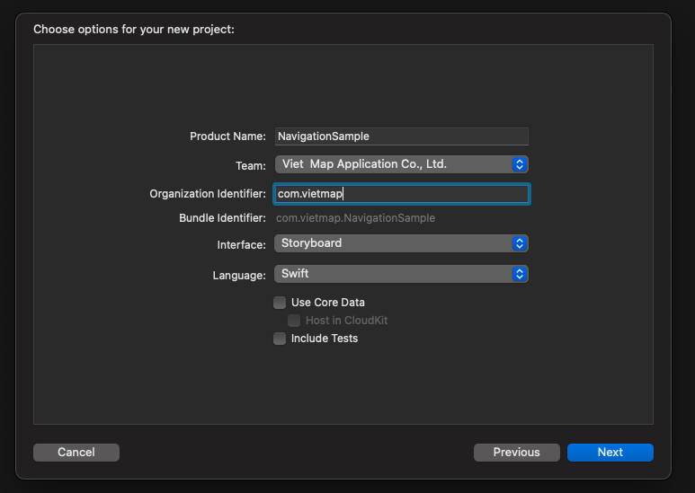
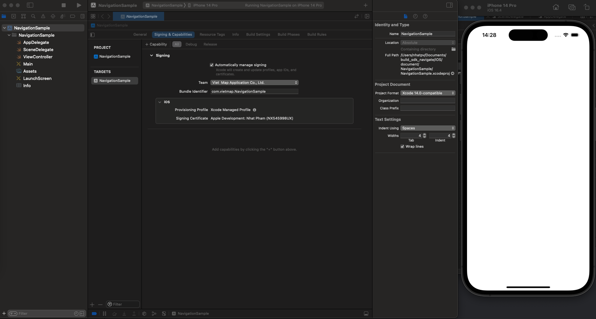
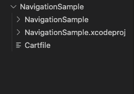
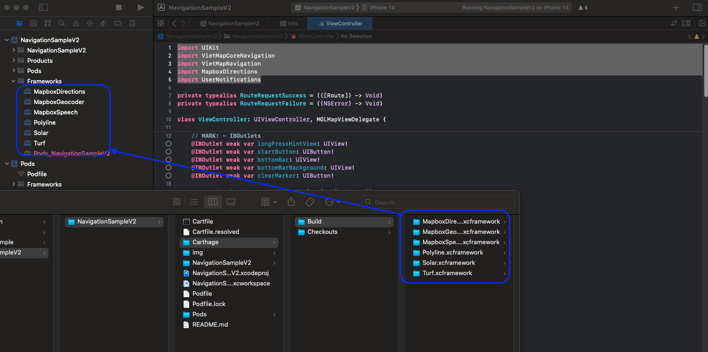
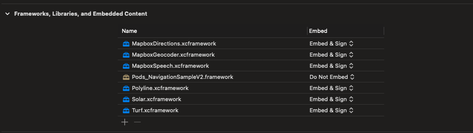
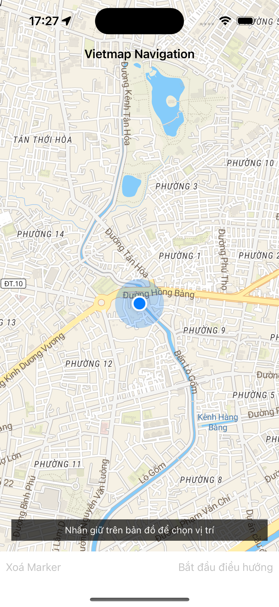

SDK iOS Version 2.0¶
Environment settings¶
Install Homebrew Check brew
If Homebrew is not installed, you will see:If Homebrew is not installed, use the following command:
Install CarthageInstall pods
Create Navigation project with xcode¶
Create project with Swift and Storyboard Open xcode, select File > New > Project 
Make sure the project runs successfully. If successful, you will receive the layout as shown below. 
Import library¶
Create Cartfile by opening terminal and running the following command:
The Cartfile file will be created in the path/to/NavigationSample directory 
To ensure Cartfile has full permissions to build the library, use the following command:
Open the Cartfile file, add the following 2 lines and save:
github "mapbox/turf-swift" ~> 0.2
github "ceeK/Solar" ~> 2.1.0
github "vietmap-company/maps-sdk-speech-ios" ~> 1.0.0
github "vietmap-company/maps-sdk-geocoder-ios" ~> 1.0.0
github "vietmap-company/maps-sdk-directions-ios" ~> 1.0.0
https://stackoverflow.com/questions/75574268/missing-file-libarclite-iphoneos-a-xcode-14-3
New file will be created:
- Cartfile.resolve: Specifies which framework will be fetched/built
- Carthage folder: contains all built frameworks
Create the Frameworks folder in NavigationSample Select NavigationSample > Right-click > New group Drag and drop all xcframework folders in the Carthage/Build folder just created above into the Frameworks folder in xcode as shown below:  Note: Make sure to convert Embed to [Embed & sign] 
Create a Podfile by opening a terminal and running the following command:
Open Podfile and add the following libraries: Then run the command:Events¶
addGestureRecognizer: Register Gesture Recognizer for mapview
Directions: Request api to search for directions
NavigationViewController: Start navigation
Subscribe to the route manager's event listener
routeControllerProgressDidChange
routeControllerDidReroute
Register to listen to events of the NavigationMapViewDelegate map manager
didSelect: WayPoint
didSelect: Route
Register to listen to the navigation manager's NavigationViewControllerDelegate event
didArriveAt
byCanceling
Build project¶
Add config to Info.plist
Request permission to access device location.
<key>NSLocationAlwaysAndWhenInUseUsageDescription</key>
<string>Get user location</string>
<key>NSLocationAlwaysUsageDescription</key>
<string>Get user location</string>
<key>NSLocationWhenInUseUsageDescription</key>
<string>Get user location</string>
<key>UIBackgroundModes</key>
<array>
<string>audio</string>
<string>location</string>
</array>
<key>VietMapURL</key>
<string>YOUR_STYLE_HERE</string>
<key>VietMapAPIBaseURL</key>
<string>YOUR_SERVER_URL</string>
<key>VietMapAccessToken</key>
<string>YOUR_API_KEY</string>

Initialize mapView¶
var mapView: NavigationMapView? {
didSet {
oldValue?.removeFromSuperview()
if let mapView = mapView {
configureMapView(mapView)
view.insertSubview(mapView, belowSubview: longPressHintView)
}
}
}
override func viewWillAppear(_ animated: Bool) {
super.viewWillAppear(animated)
startMapView()
}
func startMapView() {
self.routes = nil
self.waypoints = []
self.mapView = NavigationMapView(frame: view.bounds,styleURL: URL(string: styleView))
// Reset the navigation styling to the defaults if we are returning from a presentation.
if (presentedViewController != nil) {
DayStyle().apply()
}
Locale.localeVoice = "vi"
}
Register Gesture Recognizer for mapView¶
Create a didLongPress event to request a destination in the map.
let longTap = UILongPressGestureRecognizer(target: self, action: #selector(didLongPress(tap:)))
mapView.gestureRecognizers?.filter({ $0 is UILongPressGestureRecognizer }).forEach(longTap.require(toFail:))
mapView.addGestureRecognizer(longTap)
Get the coordinates and assign a marker to the destination in the didLongPress event.
@objc func didLongPress(tap: UILongPressGestureRecognizer) {
guard let mapView = mapView, tap.state == .began else { return }
if let annotation = mapView.annotations?.last, waypoints.count > 2 {
mapView.removeAnnotation(annotation)
}
if waypoints.count > 1 {
waypoints = Array(waypoints.suffix(1))
}
let coordinates = mapView.convert(tap.location(in: mapView), toCoordinateFrom: mapView)
// Note: The destination name can be modified. The value is used in the top banner when arriving at a destination.
let waypoint = Waypoint(coordinate: coordinates, name: "Dropped Pin #\(waypoints.endIndex + 1)")
waypoints.append(waypoint)
requestRoute()
}
Request API to search for directions¶
Request to search for a route with the starting point being the current location, the destination being the location after longPress.
func requestRoute() {
guard waypoints.count > 0 else { return }
guard let mapView = mapView else { return }
let userWaypoint = Waypoint(location: mapView.userLocation!.location!, heading: mapView.userLocation?.heading, name: "User location")
waypoints.insert(userWaypoint, at: 0)
let routeOptions = NavigationRouteOptions(waypoints: waypoints)
requestRoute(with: routeOptions, success: defaultSuccess, failure: defaultFailure)
}
fileprivate func requestRoute(with options: RouteOptions, success: @escaping RouteRequestSuccess, failure: RouteRequestFailure?) {
let handler: Directions.RouteCompletionHandler = {(waypoints, potentialRoutes, potentialError) in
if let error = potentialError, let fail = failure { return fail(error) }
guard let routes = potentialRoutes else { return }
return success(routes)
}
Directions.shared.calculate(options, completionHandler: handler)
}
Start navigating¶
Start navigation, hide the current mapView and replace it with a navigationView.
func startStyledNavigation() {
guard let route = self.routes?.first else { return }
navigationViewController = NavigationViewController(
for: route,
styles: [NightStyle()],
locationManager: NavigationLocationManager()
)
navigationViewController.delegate = self
customStyleMap()
configureMapView()
addListenerMap()
present(navigationViewController, animated: true) {
self.mapView?.removeFromSuperview()
self.mapView = nil
}
}
Register to listen to the ProgressDidChange event and the ReRoute event¶
private func addListenerMap() {
NotificationCenter.default.addObserver(self, selector: #selector(progressDidChange(_ :)), name: .routeControllerProgressDidChange, object: nil)
NotificationCenter.default.addObserver(self, selector: #selector(progressDidReroute(_ :)), name: .routeControllerDidReroute, object: nil)
}
progressDidChange returns route and location data during movement, used for camera changes and better navigation.
The example below saves the current position and adds a direction arrow for the next turn.
@objc func progressDidChange(_ notification: NSNotification ) {
let routeProgress = notification.userInfo![RouteControllerNotificationUserInfoKey.routeProgressKey] as! RouteProgress
let location = notification.userInfo![RouteControllerNotificationUserInfoKey.locationKey] as! CLLocation
currentLocation = location
setCenterIsFirst(location)
addManeuverArrow(routeProgress)
}
progressDidReroute returns new route data when the user's location is different from the original route.
@objc func progressDidReroute(_ notification: Notification) {
if let userInfo = notification.object as? RouteController {
navigationViewController.mapView?.showRoutes([userInfo.routeProgress.route])
centerMap(userInfo.locationManager.location!)
}
}
Subscribe to didSelect waypoint and route events¶
extension ViewController: NavigationMapViewDelegate {
func navigationMapView(_ mapView: NavigationMapView, didSelect waypoint: Waypoint) {
guard let routeOptions = routes?.first?.routeOptions else { return }
let modifiedOptions = routeOptions.without(waypoint: waypoint)
presentWaypointRemovalActionSheet { _ in
self.requestRoute(with:modifiedOptions, success: self.defaultSuccess, failure: self.defaultFailure)
}
}
func navigationMapView(_ mapView: NavigationMapView, didSelect route: Route) {
guard let routes = routes else { return }
guard let index = routes.firstIndex(where: { $0 == route }) else { return }
self.routes!.remove(at: index)
self.routes!.insert(route, at: 0)
}
private func presentWaypointRemovalActionSheet(completionHandler approve: @escaping ((UIAlertAction) -> Void)) {
let title = NSLocalizedString("Remove Waypoint?", comment: "Waypoint Removal Action Sheet Title")
let message = NSLocalizedString("Would you like to remove this waypoint?", comment: "Waypoint Removal Action Sheet Message")
let removeTitle = NSLocalizedString("Remove Waypoint", comment: "Waypoint Removal Action Item Title")
let cancelTitle = NSLocalizedString("Cancel", comment: "Waypoint Removal Action Sheet Cancel Item Title")
let actionSheet = UIAlertController(title: title, message: message, preferredStyle: .actionSheet)
let remove = UIAlertAction(title: removeTitle, style: .destructive, handler: approve)
let cancel = UIAlertAction(title: cancelTitle, style: .cancel, handler: nil)
[remove, cancel].forEach(actionSheet.addAction(_:))
self.present(actionSheet, animated: true, completion: nil)
}
}
Subscribe to the didArriveAt event and the byCanceling event¶
didArriveAt event is emitted when the user reaches the destination, byCanceling is the event emitted when the user cancels navigation.
extension ViewController: NavigationViewControllerDelegate {
// By default, when the user arrives at a waypoint, the next leg starts immediately.
// If you implement this method, return true to preserve this behavior.
// Return false to remain on the current leg, for example to allow the user to provide input.
// If you return false, you must manually advance to the next leg. See the example above in `confirmationControllerDidConfirm(_:)`.
public func navigationViewController(_ navigationViewController: NavigationViewController, didArriveAt waypoint: Waypoint) -> Bool {
cancelListener()
return true
}
// Called when the user hits the exit button.
// If implemented, you are responsible for also dismissing the UI.
public func navigationViewControllerDidDismiss(_ navigationViewController: NavigationViewController, byCanceling canceled: Bool) {
cancelListener()
self.navigationViewController.dismiss(animated: true) {
self.startMapView()
}
}
}
SampleCode¶
import UIKit
import VietMapCoreNavigation
import VietMapNavigation
import MapboxDirections
import UserNotifications
private typealias RouteRequestSuccess = (([Route]) -> Void)
private typealias RouteRequestFailure = ((NSError) -> Void)
class ViewController: UIViewController, MGLMapViewDelegate {
// MARK: - IBOutlets
@IBOutlet weak var longPressHintView: UIView!
@IBOutlet weak var startButton: UIButton!
@IBOutlet weak var bottomBar: UIView!
@IBOutlet weak var bottomBarBackground: UIView!
@IBOutlet weak var clearMarker: UIButton!
var navigationViewController: NavigationViewController!
var mapboxRouteController: RouteController?
var currentLocation: CLLocation!
var isFirstRender: Bool = false
var styleView = Bundle.main.object(forInfoDictionaryKey: "VietMapURL") as! String
// MARK: Properties
var mapView: NavigationMapView? {
didSet {
oldValue?.removeFromSuperview()
if let mapView = mapView {
configureMapView(mapView)
view.insertSubview(mapView, belowSubview: longPressHintView)
}
}
}
var waypoints: [Waypoint] = [] {
didSet {
waypoints.forEach {
$0.coordinateAccuracy = -1
}
}
}
var routes: [Route]? {
didSet {
startButton.isEnabled = (routes?.count ?? 0 > 0)
guard let routes = routes,
let current = routes.first else { mapView?.removeRoutes(); return }
mapView?.showRoutes(routes)
mapView?.showWaypoints(current)
}
}
// MARK: Directions Request Handlers
fileprivate lazy var defaultSuccess: RouteRequestSuccess = { [weak self] (routes) in
guard let current = routes.first else { return }
self?.clearMarker.isEnabled = true
self?.mapView?.removeWaypoints()
self?.routes = routes
self?.waypoints = current.routeOptions.waypoints
self?.longPressHintView.isHidden = true
}
fileprivate lazy var defaultFailure: RouteRequestFailure = { [weak self] (error) in
self?.routes = nil //clear routes from the map
print(error.localizedDescription)
}
override func viewWillAppear(_ animated: Bool) {
super.viewWillAppear(animated)
startMapView()
}
override func viewDidLoad() {
super.viewDidLoad()
if #available(iOS 10.0, *) {
UNUserNotificationCenter.current().requestAuthorization(options: [.badge, .alert, .sound]) { _,_ in
DispatchQueue.main.async {
CLLocationManager().requestWhenInUseAuthorization()
}
}
}
}
func startMapView() {
self.routes = nil
self.waypoints = []
self.mapView = NavigationMapView(frame: view.bounds,styleURL: URL(string: styleView))
// Reset the navigation styling to the defaults if we are returning from a presentation.
if (presentedViewController != nil) {
DayStyle().apply()
}
Locale.localeVoice = "vi"
}
func configureMapView(_ mapView: NavigationMapView) {
mapView.autoresizingMask = [.flexibleWidth, .flexibleHeight]
mapView.delegate = self
mapView.navigationMapDelegate = self
mapView.routeLineColor = UIColor.yellow
mapView.userTrackingMode = .follow
mapView.showsUserHeadingIndicator = true
let singleTap = UILongPressGestureRecognizer(target: self, action: #selector(didLongPress(tap:)))
mapView.gestureRecognizers?.filter({ $0 is UILongPressGestureRecognizer }).forEach(singleTap.require(toFail:))
mapView.addGestureRecognizer(singleTap)
}
// MARK: Gesture Recognizer Handlers
@objc func didLongPress(tap: UILongPressGestureRecognizer) {
guard let mapView = mapView, tap.state == .began else { return }
if let annotation = mapView.annotations?.last, waypoints.count > 2 {
mapView.removeAnnotation(annotation)
}
if waypoints.count > 1 {
waypoints = Array(waypoints.suffix(1))
}
let coordinates = mapView.convert(tap.location(in: mapView), toCoordinateFrom: mapView)
// Note: The destination name can be modified. The value is used in the top banner when arriving at a destination.
let waypoint = Waypoint(coordinate: coordinates, name: "Dropped Pin #\(waypoints.endIndex + 1)")
waypoints.append(waypoint)
requestRoute()
}
@IBAction func startButtonPressed(_ sender: Any) {
startStyledNavigation()
}
@IBAction func clearMarker(_ sender: Any) {
self.clearMarker.isEnabled = false
self.startButton.isEnabled = false
mapView?.removeRoutes()
mapView?.removeWaypoints()
waypoints.removeAll()
longPressHintView.isHidden = false
}
// MARK: - Public Methods
// MARK: Route Requests
func requestRoute() {
guard waypoints.count > 0 else { return }
guard let mapView = mapView else { return }
let userWaypoint = Waypoint(location: mapView.userLocation!.location!, heading: mapView.userLocation?.heading, name: "User location")
waypoints.insert(userWaypoint, at: 0)
let routeOptions = NavigationRouteOptions(waypoints: waypoints)
requestRoute(with: routeOptions, success: defaultSuccess, failure: defaultFailure)
}
fileprivate func requestRoute(with options: RouteOptions, success: @escaping RouteRequestSuccess, failure: RouteRequestFailure?) {
let handler: Directions.RouteCompletionHandler = {(waypoints, potentialRoutes, potentialError) in
if let error = potentialError, let fail = failure { return fail(error) }
guard let routes = potentialRoutes else { return }
return success(routes)
}
Directions.shared.calculate(options, completionHandler: handler)
}
func startStyledNavigation() {
guard let route = self.routes?.first else { return }
navigationViewController = NavigationViewController(
for: route,
styles: [NightStyle()],
locationManager: NavigationLocationManager()
)
navigationViewController.delegate = self
customStyleMap()
configureMapView()
addListenerMap()
present(navigationViewController, animated: true) {
self.mapView?.removeFromSuperview()
self.mapView = nil
}
}
private func customStyleMap() {
navigationViewController.mapView?.styleURL = URL(string: styleView);
navigationViewController.mapView?.routeLineColor = UIColor.yellow
navigationViewController.mapView?.userTrackingMode = .follow
navigationViewController.mapView?.showsUserHeadingIndicator = true
}
private func configureMapView() {
navigationViewController.mapView?.autoresizingMask = [.flexibleWidth, .flexibleHeight]
navigationViewController.routeController.reroutesProactively = true
}
@objc func progressDidReroute(_ notification: Notification) {
if let userInfo = notification.object as? RouteController {
navigationViewController.mapView?.showRoutes([userInfo.routeProgress.route])
}
}
@objc func progressDidChange(_ notification: NSNotification ) {
let routeProgress = notification.userInfo![RouteControllerNotificationUserInfoKey.routeProgressKey] as! RouteProgress
let location = notification.userInfo![RouteControllerNotificationUserInfoKey.locationKey] as! CLLocation
currentLocation = location
setCenterIsFirst(location)
addManeuverArrow(routeProgress)
}
private func setCenterIsFirst(_ location: CLLocation) {
if !isFirstRender {
DispatchQueue.main.asyncAfter(deadline: .now() + 1.0) {
let camera = MGLMapCamera(
lookingAtCenter: location.coordinate,
acrossDistance: 500,
pitch: 75,
heading: location.course
)
self.navigationViewController.mapView?.setCamera(camera, animated: true)
}
isFirstRender = true
}
}
private func addManeuverArrow(_ routeProgress: RouteProgress) {
if routeProgress.currentLegProgress.followOnStep != nil {
navigationViewController.mapView?.addArrow(route: routeProgress.route, legIndex: routeProgress.legIndex, stepIndex: routeProgress.currentLegProgress.stepIndex + 1)
} else {
navigationViewController.mapView?.removeArrow()
}
}
private func addListenerMap() {
NotificationCenter.default.addObserver(self, selector: #selector(progressDidChange(_ :)), name: .routeControllerProgressDidChange, object: nil)
NotificationCenter.default.addObserver(self, selector: #selector(progressDidReroute(_ :)), name: .routeControllerDidReroute, object: nil)
}
public func cancelListener() {
NotificationCenter.default.removeObserver(self, name: .routeControllerDidReroute, object: nil)
NotificationCenter.default.removeObserver(self, name: .routeControllerProgressDidChange, object: nil)
}
}
// MARK: - NavigationMapViewDelegate
extension ViewController: NavigationMapViewDelegate {
func navigationMapView(_ mapView: NavigationMapView, didSelect waypoint: Waypoint) {
guard let routeOptions = routes?.first?.routeOptions else { return }
let modifiedOptions = routeOptions.without(waypoint: waypoint)
presentWaypointRemovalActionSheet { _ in
self.requestRoute(with:modifiedOptions, success: self.defaultSuccess, failure: self.defaultFailure)
}
}
func navigationMapView(_ mapView: NavigationMapView, didSelect route: Route) {
guard let routes = routes else { return }
guard let index = routes.firstIndex(where: { $0 == route }) else { return }
self.routes!.remove(at: index)
self.routes!.insert(route, at: 0)
}
private func presentWaypointRemovalActionSheet(completionHandler approve: @escaping ((UIAlertAction) -> Void)) {
let title = NSLocalizedString("Remove Waypoint?", comment: "Waypoint Removal Action Sheet Title")
let message = NSLocalizedString("Would you like to remove this waypoint?", comment: "Waypoint Removal Action Sheet Message")
let removeTitle = NSLocalizedString("Remove Waypoint", comment: "Waypoint Removal Action Item Title")
let cancelTitle = NSLocalizedString("Cancel", comment: "Waypoint Removal Action Sheet Cancel Item Title")
let actionSheet = UIAlertController(title: title, message: message, preferredStyle: .actionSheet)
let remove = UIAlertAction(title: removeTitle, style: .destructive, handler: approve)
let cancel = UIAlertAction(title: cancelTitle, style: .cancel, handler: nil)
[remove, cancel].forEach(actionSheet.addAction(_:))
self.present(actionSheet, animated: true, completion: nil)
}
}
// MARK: - NavigationViewControllerDelegate
extension ViewController: NavigationViewControllerDelegate {
// By default, when the user arrives at a waypoint, the next leg starts immediately.
// If you implement this method, return true to preserve this behavior.
// Return false to remain on the current leg, for example to allow the user to provide input.
// If you return false, you must manually advance to the next leg. See the example above in `confirmationControllerDidConfirm(_:)`.
public func navigationViewController(_ navigationViewController: NavigationViewController, didArriveAt waypoint: Waypoint) -> Bool {
cancelListener()
return true
}
// Called when the user hits the exit button.
// If implemented, you are responsible for also dismissing the UI.
public func navigationViewControllerDidDismiss(_ navigationViewController: NavigationViewController, byCanceling canceled: Bool) {
cancelListener()
self.navigationViewController.dismiss(animated: true) {
self.startMapView()
}
}
}